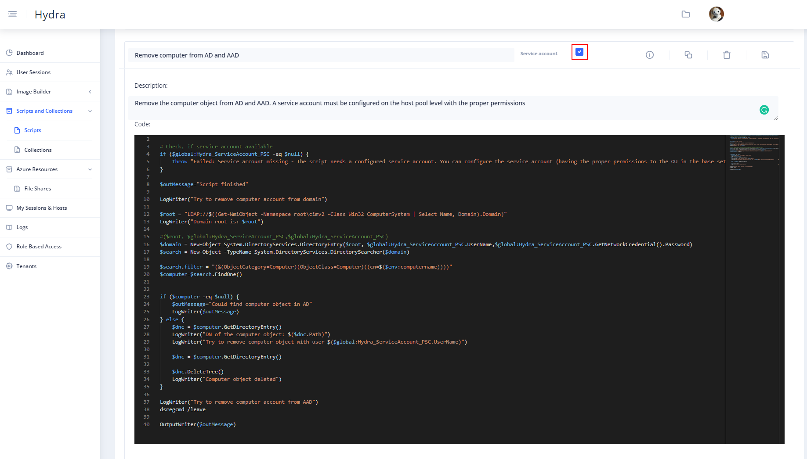
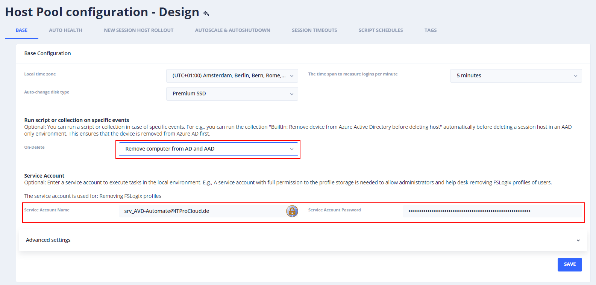
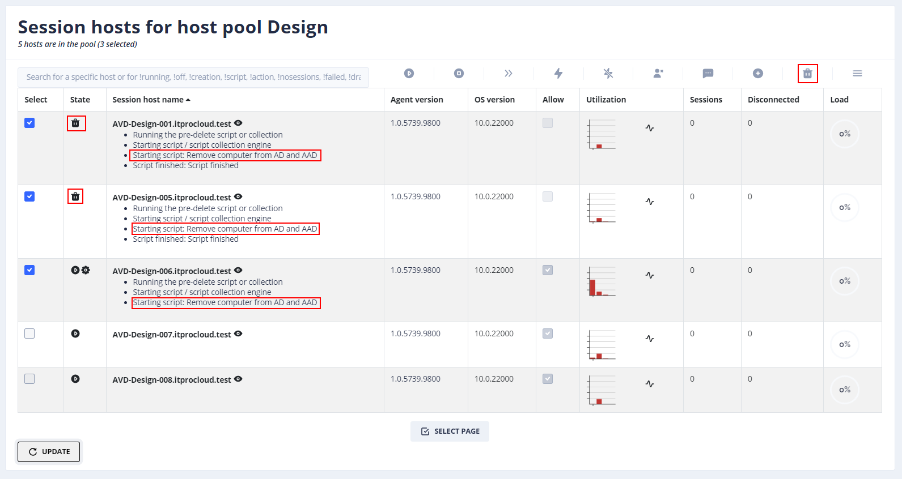

Automatically remove a computer object from AD while removing a session host in AVD
With my tools WVDAdmin and Hydra for Azure Virtual Desktop, you can easily manage Azure Virtual Desktop. It also includes the deletion of session hosts and VMs with a single click - or automated. If the host - or computer object - is AD domain-joined, the compute object is usually not deleted and re-used on the next deployment.
In some circumstances, it would make sense to also delete the computer object: If you are running the environment hybrid-joined, the orphan computer objects are synced to AAD - even if you delete the AAD device of the computer.
To clean up the AD and AAD, I use a script running on the session host shortly before deleting the host (ok, the host must be started to do that). While the script runs on the session host, the host can remove itself easily from Azure AD. To remove it also from AD, a service account is used. You can put a service account to Hydra on a host pool level (Base settings). If the service account has the proper permission to remove the computer object, we can leave both ADs with one script. For that, create a script in Scripts and Collections -> Scrips with the name "Remove computer from AD and AAD":

With the following script (please tick the checkbox "Service Account"): ```
Each PowerShell script can use internal logging to store logging data to the local disk. The log is stored in %Windir%\System32\LogFiles\Hydra.Logging.log 
Check, if service account available
if ($global:Hydra_ServiceAccount_PSC -eq $null) { throw "Failed: Service account missing - The script needs a configured service account. You can configure the service account (having the proper permissions to the OU in the base settings of the pool)." }
$outMessage="Script finished"
LogWriter("Try to remove computer account from domain")
$root = "LDAP://$((Get-WmiObject -Namespace root\cimv2 -Class Win32_ComputerSystem | Select Name, Domain).Domain)" LogWriter("Domain root is: $root")
$domain = New-Object System.DirectoryServices.DirectoryEntry($root, $global:Hydra_ServiceAccount_PSC.UserName,$global:Hydra_ServiceAccount_PSC.GetNetworkCredential().Password) $search = New-Object -TypeName System.DirectoryServices.DirectorySearcher($domain)
$search.filter = "(&(ObjectCategory=Computer)(ObjectClass=Computer)((cn=$($env:computername))))" $computer=$search.FindOne()
if ($computer -eq $null) { $outMessage="Could find computer object in AD" LogWriter($outMessage) } else { $dnc = $computer.GetDirectoryEntry() LogWriter("DN of the computer object: $($dnc.Path)") LogWriter("Try to remove computer object with user $($global:Hydra_ServiceAccount_PSC.UserName)")
$dnc = $computer.GetDirectoryEntry()
$dnc.DeleteTree()
LogWriter("Computer object deleted")
}
LogWriter("Try to remove computer account from AAD") dsregcmd /leave
OutputWriter($outMessage) ```
Do run the script automatically on delete, go to the host pool configuration in Hydra: Base -> Run script or collection on specific events -> On-Delete and select your script

If you then delete a host, the computer account in AD and the device in AAD are deleted:
